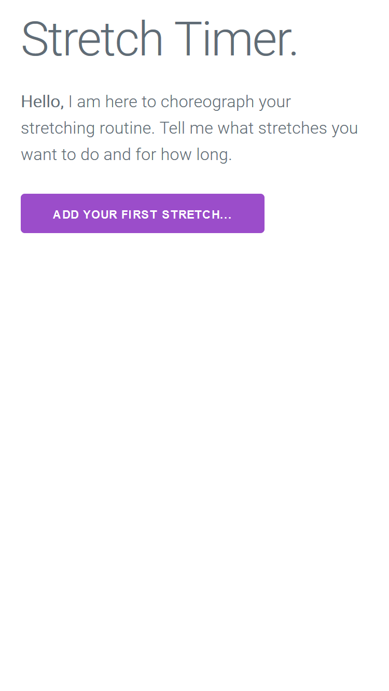
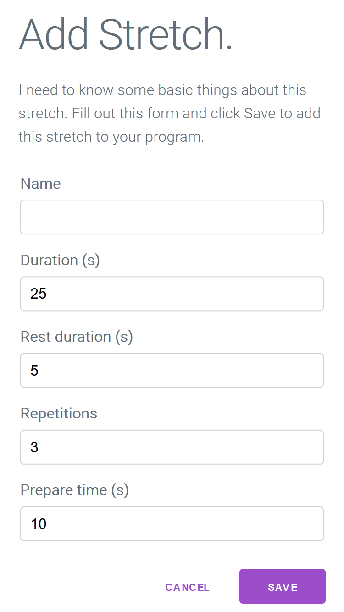
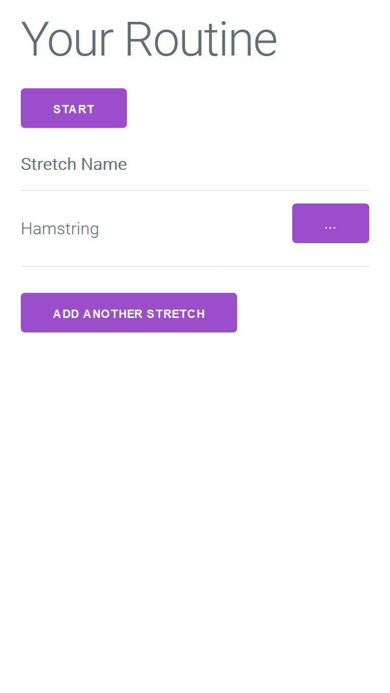
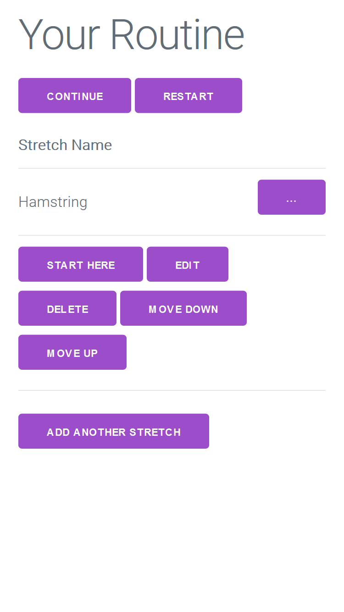

Stretch Timer

Do you do a stretch or strength routine prescribed by your personal trainer, physio or one of your own? Having a hard time with timing, or tempted to skip exercises? This is the solution.
Stretch Timer transforms your routine from a chore to a pleasure, giving you discipline and convenince. You won't want to go back to a stop watch once you use it.
It tells you both on-screen and through voice when to start and stop and rest. It times every stretch, every rest, and includes preparation time to move from one position to another.
It says "All Finished" in a sweet way when you are done. Boy, that is satsifying after doing those training exercises!
To open the app, click the button below:
When you first open the app, there is no exercise program and you are invited to add your first stretch:
Clicking "ADD YOUR FIRST STRETCH" will show this form with the fields to fill out for the timings I mentioned in the Concepts section above:
Fill this in and click SAVE to add this first stretch. You will then see your exercsie program, with one exercise:
You can add more by clicking ADD ANOTHER STRETCH. You can also click the ... button to perform actions on the exercise, such as editing, deleting and moving:
When you are ready to start, click START and the program will begin. You will hear the voice say "Prepare":
At any time click HOME to go back to the home screen. This pauses the routine so you can resume again. Also you can use the navigation controls to skip back and ahead or pause the exercise
The up and down arrow buttons skip to the previous or next exercise. The back and forward buttons skip to the previous or next rep. And the pause button lets you pause and resume the program.
If you want to start the program in a particular place, from the home screen click ... next to an exercise and then click START HERE
And that is all there is too it. Good luck and happy stretching!
Stretch Timer is free software. Source code is available on Github